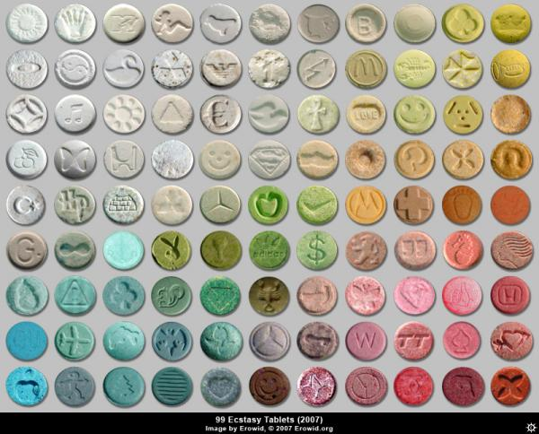

ecstasy
Τι είναι;
Το «έκσταση» είναι ψυχοδραστική ουσία, η οποία συνήθως κατασκευάζεται σε παράνομα εργαστήρια. Στην πραγματικότητα η σημασία του όρου «έκσταση» έχει εξελιχθεί και δεν αναφέρεται πλέον σε μία μόνο ουσία αλλά σε ένα φάσμα ουσιών με παραπλήσια επίδραση στους χρήστες. Συχνά κάθε χάπι με λογότυπο στην επιφάνειά του ονομάζεται «έκσταση», ανεξάρτητα από τη χημική του σύσταση. Αν και η ουσία συνήθως διακινείται σε δισκία, μπορεί επίσης να έχει τη μορφή σκόνης ή κάψουλας. Τα δισκία μπορεί να έχουν πολλά διαφορετικά σχήματα και μεγέθη.
Πώς καταναλώνεται;
Συνήθως καταπίνεται, άλλα μπορεί επίσης να ληφθεί από τη μύτη ή ενδοφλέβια.
Πώς επιδρά στους χρήστες;
Το «έκσταση» μπορεί να ενισχύσει τα επίπεδα ενσυναίσθησης των χρηστών και να δημιουργήσει αίσθημα οικειότητας απέναντι στους άλλους. Μπορεί επίσης να κάνει τους χρήστες να νιώθουν πιο κοινωνικοί και ενεργητικοί.
Ποιοι είναι οι κίνδυνοι που συνδέονται με τη χρήση «έκσταση»;
Bραχυπρόθεσμα η ουσία μπορεί να κάνει τον οργανισμό να αγνοήσει επικίνδυνες ενδείξεις, όπως την αφυδάτωση, τη ζάλη και την εξάντληση, και μπορεί να επηρεάσει την ικανότητά του να ρυθμίζει τη θερμοκρασία. Επιπλέον το «έκσταση» μπορεί να βλάψει σοβαρά, όργανα όπως το συκώτι και τα νεφρά. Η χρήση του μπορεί να οδηγήσει σε σπασμούς και καρδιακή ανεπάρκεια.Μεγάλες δόσης «έκσταση» μπορεί να προκαλέσουν ψυχοκινητική ανησυχία, άγχος και σοβαρές παραισθήσεις.Η μακροχρόνια χρήση «έκσταση» μπορεί να βλάψει συγκεκριμένα τμήματα του εγκεφάλου, οδηγώντας σε σοβαρή κατάθλιψη και σε απώλεια μνήμης.
Άλλοι κίνδυνοι
Δισκία και χάπια που πωλούνται ως «έκσταση» μπορεί να περιέχουν άλλες, δυνητικά επικίνδυνες ουσίες, οι οποίες μπορεί να ποικίλουν πολύ μεταξύ τους σε δραστικότητα και στις επιδράσεις που προκαλούν.